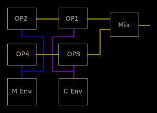
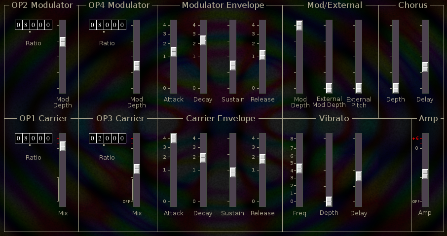

ORGN
 Previous( masa )
Next( rdrum )
Home
Contents
Previous( masa )
Next( rdrum )
Home
Contents
ORGN started out as a simple combo organ but morphed into something slightly more complex.
The tone is built around 2 FM carrier modulator pairs where the carriers share an envelope and the modulators share an envelope. Operators 2 and 4 are modulators, operators 1 and 3 are carriers.
The controls are fairly obvious, tumblers are used for frequency ratios, Mod Depth for modulation depth, Mix for carrier amplitudes. The envelopes are ADSR style, The Vibrato section is straight forward.
The Mod/External section deals with the external control signal and
modulation depth.
Mod Depth Controls modulation depth of both modulators in
tandem.
External Mod Depth sets amount of external control signal applied to
modulation depth.
External Pitch sets amount of external control signal applied to pitch.
A Chorusing effect is produced by adding a fixed frequency bias to the
modulators.
Depth Chorus depth (frequency offset)
Delay Chorus effect onset delay time.
ORGN Parameters
- amp, overall linear amplitude (0,2)
- vfreq, vibrato frequency (0,8)
- vdelay, vibrato onset delay (0,1)
- vdepth, programmed vibrato depth (0,1)
- vibrato, manual vibrato depth (0,1)
- chorus, chorus depth (0,1)
- chorusDelay, chorus onset delay (0,4)
- r1, op1 carrier frequency ratio
- r2, op2 modulator frequency ratio
- r3, op3 carrier frequency ratio
- r4, op4 modulator frequency ratio
- amp1, op1 carrier linear amplitude (0,2)
- amp2, op2 modulator amplitude (0,1)
- amp3, op3 carrier linear amplitude (0,2)
- amp4, op4 modulator amplitude (0,1)
- cattack, carrier attack time (0,4)
- cdecay, carrier decay time (0,4)
- csustain, carrier sustain level (0,1)
- crelease, carrier release time (0,4)
- mattack, modulator attack time (0,4)
- mdecay, modulator decay time (0,4)
- msustain, modulator sustain level (0,1)
- mrelease, modulator release time (0,4)
- modulationDepth, tandem modulation depth (0,1)
- xToModulationDepth, external signal to modulation depth (0,1)
- xToPitch, external signal to pitch (0,1)
Previous( masa ) Next( rdrum ) Home Contents